Live https://pl-performantlabs.com.3.ddev.site:8493/ vs preview docs/pl2/Previews/homepage.html. Captured 2026-05-09 with Playwright + ImageMagick.
Operator-readable list of every visible delta. Status pills indicate severity.
max-width or font-size cap on the heading at the tablet breakpoint.Live and preview screenshots had different pixel dimensions at every viewport (live page is 1.30–1.40 × the preview height; live includes a vertical scrollbar in the screenshot at desktop and tablet widths). Both images were padded with magick … -background white -gravity northwest -extent {maxW}x{maxH} to a common canvas before compare -metric AE.
| Viewport | Live (W×H) | Preview (W×H) | Pixels different | Whole-page delta % | Verdict |
|---|---|---|---|---|---|
| 1280×800 | 1294 × 5784 | 1280 × 4341 | 3,897,740 | 52.08 % | REWORK |
| 768×1024 | 803 × 6404 | 768 × 4829 | 2,337,580 | 45.46 % | REWORK |
| 375×667 | 375 × 7899 | 375 × 6166 | 1,346,950 | 45.47 % | REWORK |
Threshold key (per workflow-ofts.md §S §"Verdict thresholds"): < 2 % presumed MATCH; 2–5 % triaged; > 5 % presumed REWORK.
Drag the slider to wipe between live (left) and preview (right). The two screenshots are normalised to a common width; vertical extent reflects each rendered page's true height.
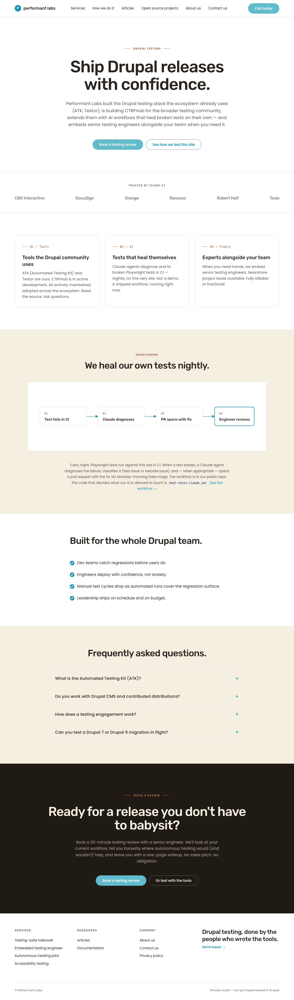
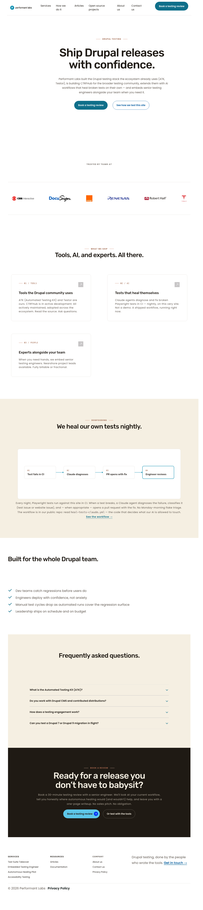
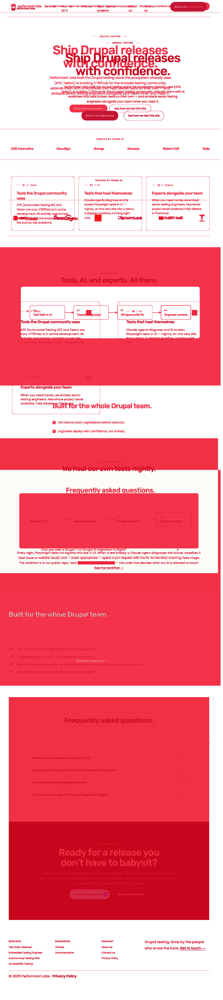
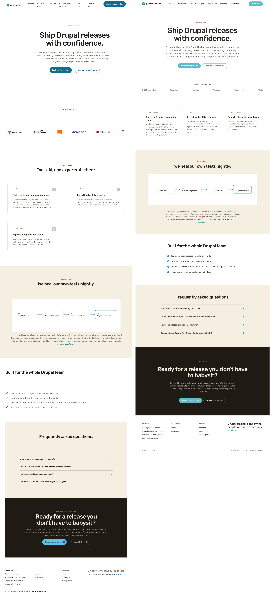
Note especially the hero headline overflow on live: "Ship Drupal releases with confidence." extends past the right edge.
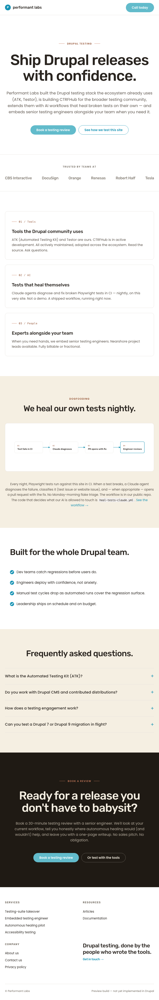
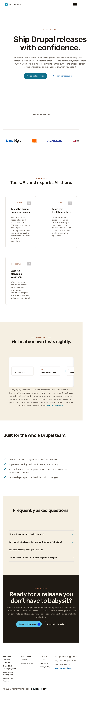
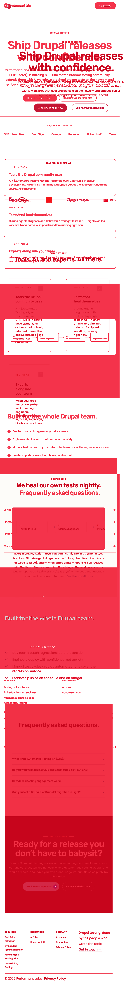
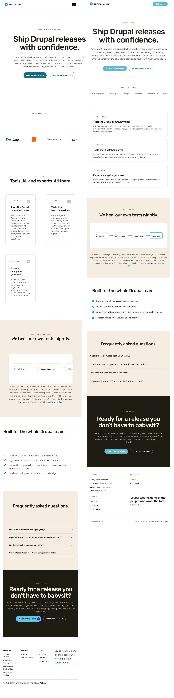
Note especially the header pattern divergence (live: hamburger only; preview: wordmark + "Call today" pill, no hamburger) and the logo grid pattern divergence (live: vertical bitmap stack; preview: 3 × 2 text grid).
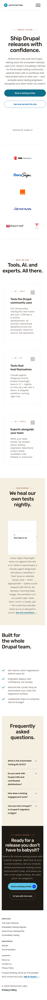
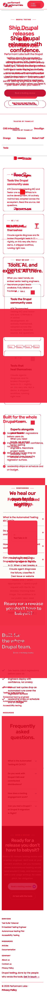
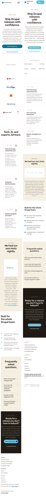
Each row pairs a section, viewport, status, plain-English description, and cropped thumbnails of live (left) and preview (right) for the section in question.
| Section | Viewport | Status | Description | Crop preview (live | preview) |
|---|---|---|---|---|
| Header / nav | 1280 | REWORK | Live row is taller, has full primary nav and a large "Book a testing review" pill. Preview is compact: wordmark + small "Call today" pill, no nav. |
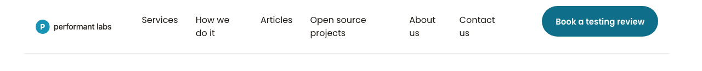 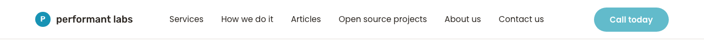 |
| Header / nav | 375 | REWORK | Opposite responsive patterns: live shows hamburger only with no CTA; preview shows wordmark wrapped to two lines plus a "Call today" pill, no hamburger. |
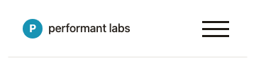 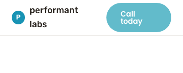 |
| Hero band | 1280 | REWORK | Live headline ~120 px (display-2xl-equivalent); brief and preview both use display-xl ~72 px. Live also adds ~600 px of empty whitespace below the CTA pair before the logo band. |
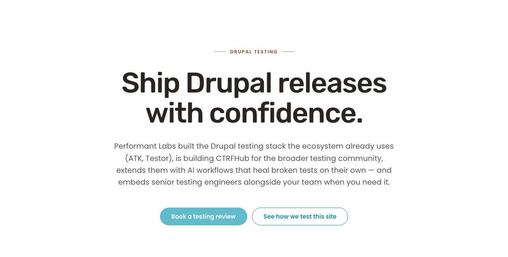 |
| Hero band | 768 | REWORK | Live's hero headline overflows the right viewport edge. Preview wraps cleanly. Indicates a missing max-width or responsive font-size cap. |
|
| Logo grid | 1280 | DELTA | Both render bitmap logos at desktop. Cell heights and spacing differ; live cells are taller. Visually similar but not pixel-identical. |
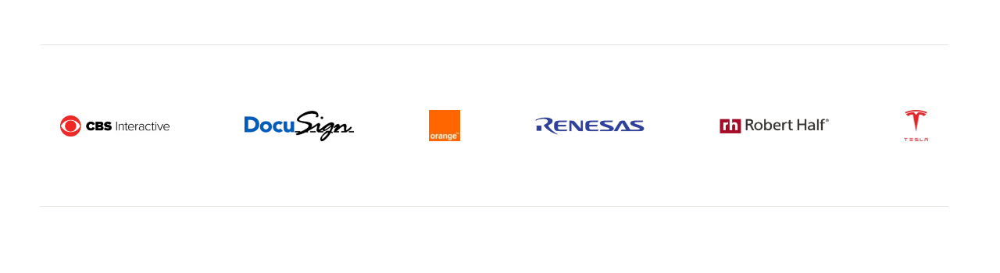 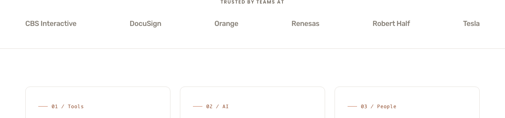 |
| Logo grid | 375 | REWORK | Live: vertical column of bitmap logos, one per row, very tall. Preview: 3 × 2 grid of text names. Different responsive strategy — operator decision needed. |
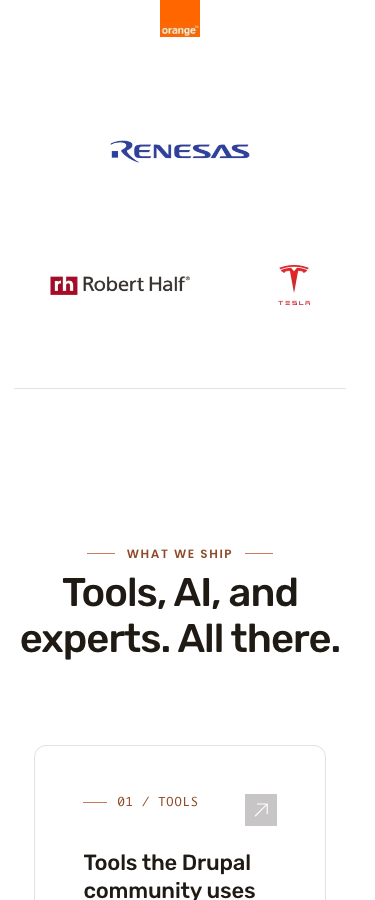 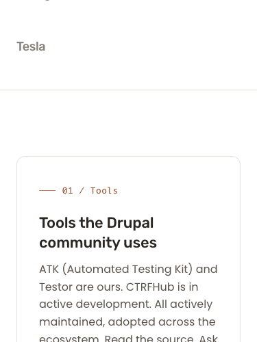 |
| Feature cards | 1280 | REWORK | Live: 2 + 1 layout (Tools/AI on row 1, People alone on row 2). Brief specifies a single 3-column row at desktop; preview matches the brief. |
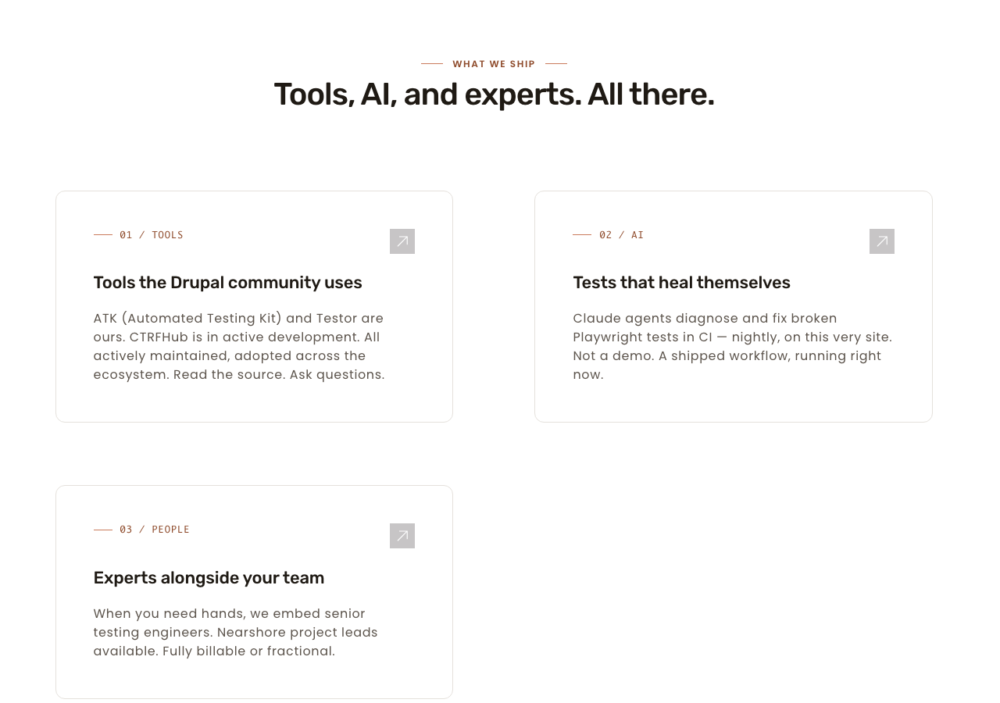 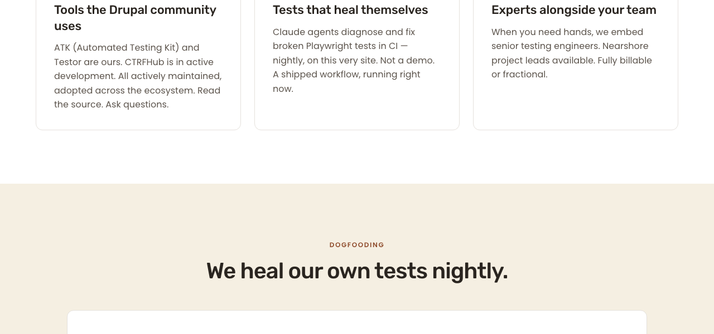 |
| Heal-flow | 1280 | MATCH | Four-step pill row, terracotta step numbers, teal connectors, and the highlighted step-04 outline render essentially identically. Outer card chrome and dogfooding kicker also match. |
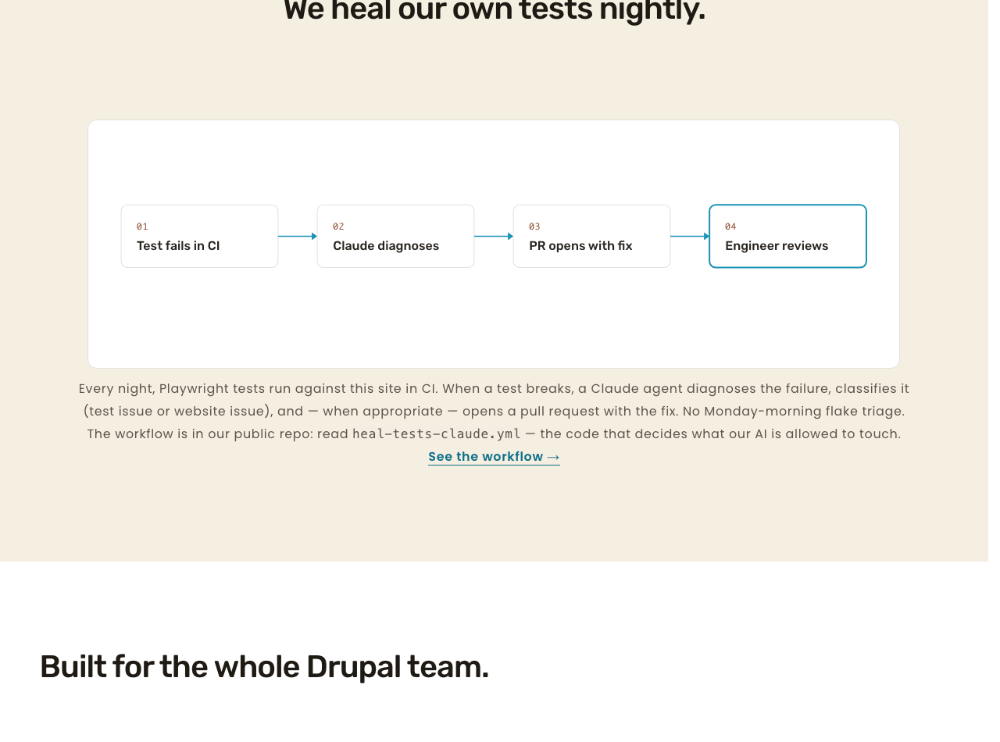 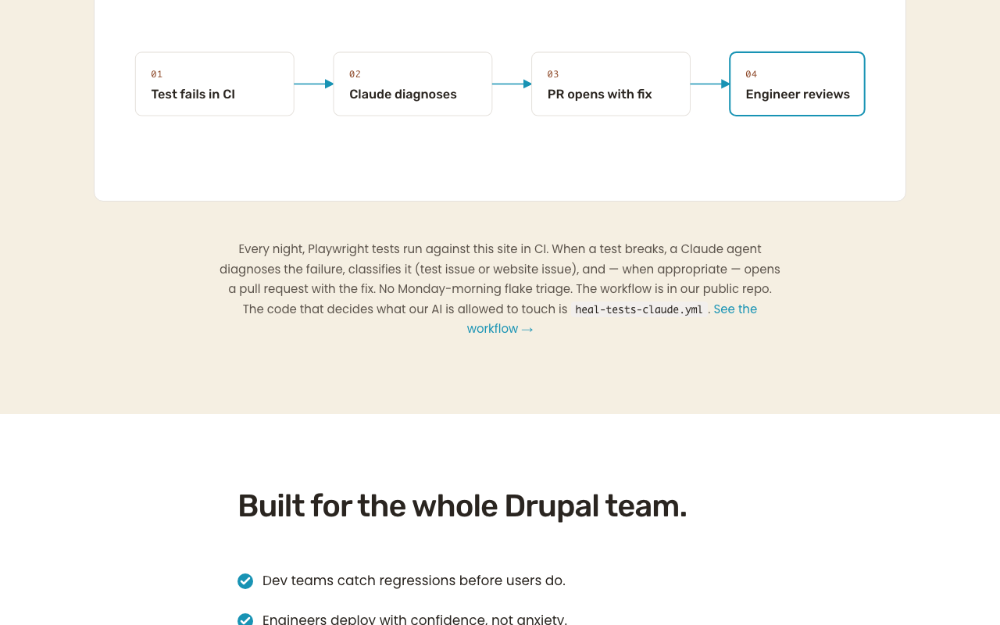 |
| Footer-CTA + footer | 1280 | DELTA | Dark espresso band, terracotta "BOOK A REVIEW" kicker, headline, two CTAs all match. Differences: live primary CTA includes inline arrow glyph (preview does not); live footer link labels are Title Case (preview is sentence case); live shows "© 2026 Performant Labs · Privacy Policy" (preview shows the "Preview build" notice — expected). |
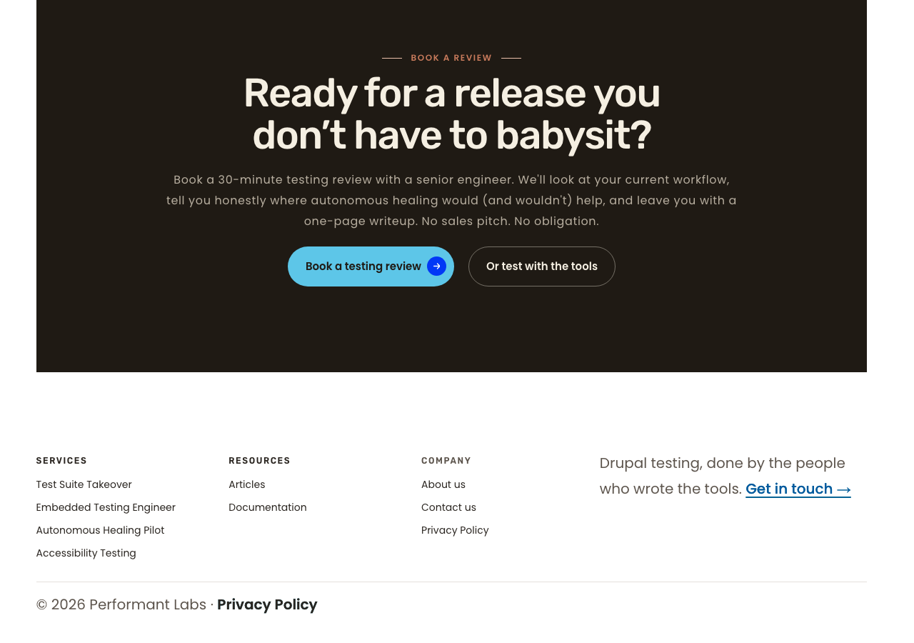 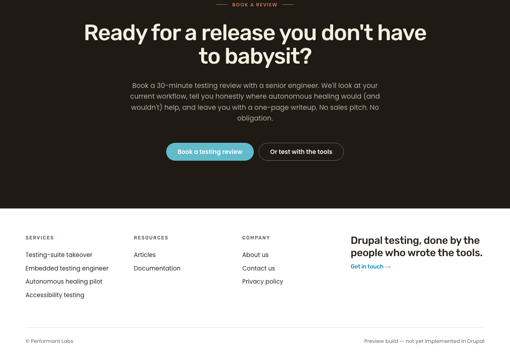 |
ddev drush cget system.theme default → 'system.theme:default': performant_labs_20260502.cd docs/pl2/Previews && python3 -m http.server 8765 &.chromium.launch() → newContext({viewport}) → page.goto({waitUntil:'networkidle'}) → 800 ms settle → page.screenshot({fullPage:true})) at 1280×800, 768×1024, 375×667 against the live URL and the local preview URL. Saved under docs/pl2/handoffs/screenshots/cycle-8/.magick … -background white -gravity northwest -extent {W}x{H} (because the live and preview heights differed).compare -metric AE to compute pixel differences and emit the diff PNG; computed delta % as (pixels / (W*H)) * 100.magick +append.magick … -crop WxH+X+Y) and embedded them in this report.Full handoff with verdict, rework list, and design-brief compliance table: phase-8-visual-parity-S.md.